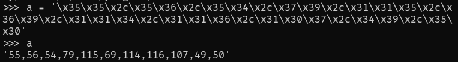

前言
试着直接上手入门题来入门，结果发现难度不是很大，而且还循序渐进地学了不少东西，对我来说算是一个很好的入门方式。打算在这里简单总结一下每一题中学到的东西，虽然不是很难但是很零碎，也方便以后忘记了能查到，就当一个简单的Writeup。
1. view_source
正如题目所说，直接查看网页源代码即可，但是比较坑的是在chrome上按F12没有反应，要按Ctrl+u才能看到源代码，或者直接访问 view-source:http://220.249.52.000:50000/ 也行，两个方法都是打开同一个页面，除此之外BurpSuite抓响应包也行，虽然有些大材小用。顺便贴一个网页的源代码。
1 |
|
2. get_post
如题所示，要点在于get和post，按照网页提示分别使用get和post方法各提交一个变量即可。
get方式直接使用网页URL加 /?a=1 进行提交即可，
然后网页要求使用post方式提交一个b=2；
这里除了使用HackBar也可以使用BurpSuite抓包并修改提交方法为post实现，因为买不起HackBar的证书，所以使用BurpSuite改包。具体的操作不赘述，在抓到包之后右键选择切换请求方式，这里有一点坑，除了要把b=2用post方法发过去，还要保留原来的a=1，所以切换请求方式之后要对报文做一些修改，如下图所示，即包含b=2，也要有a=1。

最后跳转的网页就有flag了。
3. robots
题目描述如下：
X老师上课讲了Robots协议，小宁同学却上课打了瞌睡，赶紧来教教小宁Robots协议是什么吧。
其中提到了Robots协议，一开始我也不清楚这是个什么协议，后来直接谷歌之后才知道原来网站根目录下的那个robots.txt就是叫Robots协议。所以直接访问这个文件，然后看到有一个Disallow的文件在目录下。
直接访问这个PHP文件就可以得到flag了。
4. backup
题目描述如下：
X老师忘记删除备份文件，他派小宁同学去把备份文件找出来,一起来帮小宁同学吧！
根据网页提示，直接想到文件名是index.php.bak，于是直接访问这个文件得到flag。
如上的解题方法犹如看过别人的Writeup（虽然我真的看过），让人觉得很不科学，所以除此之外还可以用扫描工具扫一下网站的根目录，以下使用的是dirsearch扫描的，可以看到的结果如下。
于是访问index.php.bak即可得到flag。
5. cookie
题目的描述如下：
X老师告诉小宁他在cookie里放了些东西，小宁疑惑地想：‘这是夹心饼干的意思吗？’
众所周知，网页的cookie并不是夹心饼干，而是存放在客户端的数据，因此这一题与服务器发送的cookie有关，访问网页，按F12查看响应头，在响应头中可以看到服务器给的cookie是 look-here=cookie.php，于是访问该PHP文件。
根据网页的提示，再次查看响应头即可在flag字段找到flag。
6.disabled_button
题目的描述如下：
X老师今天上课讲了前端知识，然后给了大家一个不能按的按钮，小宁惊奇地发现这个按钮按不下去，到底怎么才能按下去呢？
结合描述和题目，再访问网页看看，网页中间赫然出现一行字和一个按钮，当然这个按钮没有办法点击。
F12查看网页源代码，可以看到这个按钮的几个属性，将其中的disabled删除即可点击，或者直接用post方法发送一个auth=flag也可以，这里选择用post方法。
7. weak_auth
直接看网页，结合题目意思，要点应该是弱口令爆破，网页提供用户名和密码两个输入。
出于爆破的时间考量，直接指定用户名为最简单的admin，密码直接使用常见密码库。接下来讲一下使用BurpSuite进行爆破的操作方式。
- 网页点击login，然后在BurpSuite抓到包后，点击发送到Intruder；
- 在Intruder中使用右侧按钮确定要爆破的值所在位置。
- 在Payloads标签中选择合适的字典，这里随便从网上就能找到简单的字典，或者使用自带的字典。

- 点击右上方的Start attack按钮即可开始爆破，在弹出窗口中点击Length栏，将响应报文按长度大小排序，鉴于正确的响应相比于错误的长短不定，可以时不时改变排序规则来确保不会漏过长度不同的报文。
最后在密码为123456时，报文长度为437与其他报文长度不同，所以使用密码123456进行登录得到flag。
8. simple_php
题目描述如下：
小宁听说php是最好的语言,于是她简单学习之后写了几行php代码。
打开网页，网页内容直接给了PHP源码，故本题的要点是代码审计。
阅读代码可知，该代码通过网页的get方法获取两个变量a和b，然后进行三次判断，通过传入合适的变量值即可得到flag1和flag2。再分别看到三次判断，第一个if语句中，要令a的值为0且a，这咋一看不可能，但在PHP中 “==” 会将变量转换为常量的类型，再进行判断，而 ‘0a’ 在转换为数字之后就是数字 0，因此可以通过该if语句，并输出flag1。关于“==”和“===”的区别可以通过如下代码的输出印证。
1 |
|
之后是第二个if语句，该语句中的 is_numeric 函数用于判断传入的参数类型是否为数字，若为数字类型则返回True否则为False，结合第三个if语句，可以得知b的值要大于1234且不能为数字，与第一个if语句相同，“>”和“<”并不会进行类型判断，所以这里可以使用b=9999a，使得b既不是数字，又大于1234。因此传入的参数为：/?a=0a&b=9999a。
9. xff_referer
题目描述如下：
X老师告诉小宁其实xff和referer是可以伪造的。
由题目描述可知，本题的要点是伪造xff和referer，再来看看网页，打开网页提示ip必须为123.123.123.123，故先使用xff伪造IP。
故先使用xff伪造IP地址。在BurpSuite中抓包并修改请求头，添加字段X-Forwarded-For并将值设为123.123.123.123。最后的请求头如下图所示。
再然后要求来自google.com，同样在BurpSuite中向请求头添加Referer字段，值为https://www.google.com。最后在网页中得到flag。
10. webshell
题目描述如下：
小宁百度了php一句话,觉着很有意思,并且把它放在index.php里。
打开网页看看是什么。
结合题目描述和网页给的PHP代码，可以得知本题的要点是webshell的使用，因此该PHP代码既是执行远程命令的。简单分析一下这句最简单的后门，“@”表示隐藏错误输出，eval函数在PHP中会将传入的参数作为PHP语句直接执行，注意这里是作为PHP执行的，而不是直接shell，所以如果想执行shell命令要再加个system函数。这个后门可以通过中国菜刀直接使用，配置如下图所示，地址栏右侧应填入密码，即post过去的变量名，这里使用的是shell。
除了使用菜刀，也可以通过BurpSuite直接修改HTTP请求来完成，如下图所示，注意因为eval是执行PHP命令，所以参数末尾要加上“；”。
11. command_execution
题目的描述如下：
小宁写了个ping功能,但没有写waf,X老师告诉她这是非常危险的，你知道为什么吗。
再来看看网页；
结合描述和网页，可以推断要点在于这个ping命令的执行，没有waf代表可以执行其他的命令，而不止是ping，尝试一下ls命令。
可以看到ls命令成功执行，且网页根目录下只有一个index.php。接下来要做的就是找flag，最后在home中找到flag.txt。
12. simple_js
描述如下：
小宁发现了一个网页，但却一直输不对密码。(Flag格式为 Cyberpeace{xxxxxxxxx} )
打开网页看看。
所以只需要输入正确的密码就可以了，但是密码又是多少呢，F12看一下网页源代码，可以看到一段JavaScript脚本如下。
1 | function dechiffre(pass_enc) |
具体的语句就不一一解析了，可以确定的一点是 dechiffre 函数传入的参数并不会对输出有任何影响，也就是说无论你输入的密码是什么，最后得到的值都是 FAUX PASSWORD HAHA 。
那么正确的打开方式应该是怎样的呢？首先可以确定的是传入dechiffre函数的那串字符与最终的flag应该有直接关联，所以将字符串丢进python中转码，得到如下字符串，保存备用。

接下来简单分析一下dechiffre函数干了些什么，由于通过各种重新赋值的方式，传入的参数并没有真正的参与到结果的运算中，这也是保证函数输出不变的方法。所以关注点应当落在对tab2的处理上，首先精简一下代码，去掉无用的部分。
1 | function dechiffre(pass_enc) |
经过分析操作逻辑之后，并没有什么好的思路，函数主体不改动的情况下没有办法得到其他输出，但因为本题的flag来源就是这一段JavaScript代码，所以应当存在一个函数能得到正确的flag。于是想到题目描述特别给出的flag格式提示，最终得到的flag只是大括号内的主体。综上所述，flag只有一个，那就是在代码中出现多次的 String.fromCharCode 函数，尝试分别将pass和之前转换的字符串分别作为参数传入，提交之后可知转换后的字符串是正确的flag，对应的JavaScript代码如下。
后记
攻防世界的Web方向新手练习区12个题目到此就全都完成了，后续的进阶区Writeup做完几题再一起写下来，剩下的是我的碎碎念时间。
写到这里真不容易，虽然每一题在我开始做的时候都觉得不难，但是写成Writeup出来还是花费挺多时间。虽然访问量不大，但还是谢谢各位能看到这里！题目中如有任何疏漏和错误还请各位多多指教，毕竟我也只是刚入门的萌新，在此谢过各位大佬。